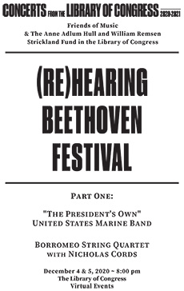

Related Resources
More Performing Arts on:

SATURDAY, DECEMBER 5, 2020
Don't Miss - On this page: Concert, Conversations, Downloadable Program and Other Resources.
Download Program (PDF, 1.15MB)

Borromeo String Quartet (Photo credit: Richard Bowditch).
Nicholas Cords (Photo credit: Erin Baiano).
BEETHOVEN/ANONYMOUS/KITCHEN
Selection from Symphony no. 7 in A major, op. 92: II
BEETHOVEN/ANONYMOUS/KITCHEN
Symphony no. 8 in F major, op. 93
BEETHOVEN
Quartet in B-flat major, op. 130
Grosse Fuge, op. 133
Explore musical relationships in Beethoven’s late works with the preeminent Borromeo String Quartet, featuring his op. 130 string quartet and the legendary Grosse Fuge, labelled by Stravinsky as “an absolutely contemporary piece of music that will be contemporary forever.”
Renowned violist Nicholas Cords joins the quartet for a performance of Beethoven’s 8th symphony in transcription. Hailed for its passionate and fearless performances, the Borromeo carries listeners through extremes of expression, from intimate to triumphant, playing monumental works to celebrate the 250th anniversary of Beethoven’s birth.
Explore Beethoven in the Library's collection with our new resource:
Beethoven: A Guide to Primary and Secondary Resources at the Library of Congress
This concert is part of our (Re)Hearing Beethoven Festival. Be sure to check out the full range of events!
Other ways to watch ...
Explore Related Collections and Resources
- Beethoven. String Quartet in B♭ major, op. 130, Presto (Holograph manuscript)